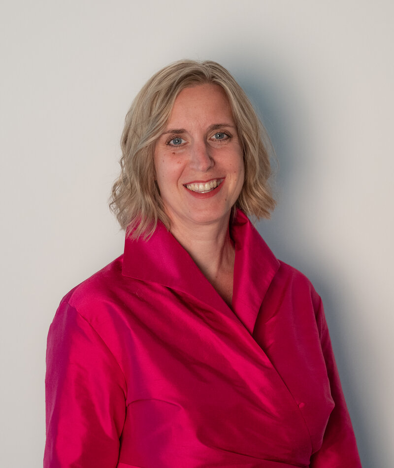

Gynäkologie & Vorsorge
Regelmäßige Vorsorge sowie Abklärung und Behandlung gynäkologischer Beschwerden, Zyklus- und Blutungsstörungen, Infektionen und Unterbauchbeschwerden.
Frauenmedizin bedeutet für mich, medizinische Kompetenz mit verständlicher Kommunikation, respektvoller Betreuung und einem individuellen Blick auf Ihre Situation zu verbinden.
Alle Kassen und privat · Consultations also available in English.

Als Fachärztin für Gynäkologie und Geburtshilfe begleite ich Frauen von der Jugend über Familienplanung, Schwangerschaft und Geburt bis zu den Wechseljahren und darüber hinaus.
Mir ist wichtig, dass Sie sich mit Ihren Anliegen ernst genommen und medizinisch gut betreut fühlen. Dazu gehören für mich verständliche Information, respektvolle Kommunikation und – wo immer möglich – gemeinsam getroffene Entscheidungen.
Regelmäßige Vorsorge sowie Abklärung und Behandlung gynäkologischer Beschwerden, Zyklus- und Blutungsstörungen, Infektionen und Unterbauchbeschwerden.
Mutter-Kind-Pass-Untersuchungen, Ultraschall, CTG-Kontrollen und ärztliche Beratung zu Fragen rund um Schwangerschaft und Geburt.
Beratung zu hormonellen und hormonfreien Methoden sowie Einlage, Wechsel und Entfernung von Hormon- und Kupferspiralen.
Beratung, Zyklusbeurteilung und erste Schritte der Abklärung; bei Bedarf weitere Begleitung in Zusammenarbeit mit spezialisierten Zentren.
Ein geschützter Rahmen für den ersten Frauenarztbesuch und Fragen zu Menstruation, Zyklus, Verhütung und Sexualität.
Individuelle Beratung in Perimenopause und Menopause sowie Besprechung hormoneller und nicht-hormoneller Behandlungsmöglichkeiten.
Abklärung und Beratung bei Harninkontinenz, Senkungsbeschwerden und weiteren Beckenbodenproblemen.
Raum für Fragen und Beschwerden rund um Sexualität und sexuelles Wohlbefinden – offen, respektvoll und ohne Tabus.
Schwangerschaft und Geburt begleiten mich seit Beginn meiner fachärztlichen Ausbildung und sind bis heute ein besonderer Schwerpunkt meiner Arbeit.
In meiner Ordination biete ich Mutter-Kind-Pass-Untersuchungen, Ultraschalluntersuchungen und CTG-Kontrollen sowie ärztliche Beratung zu Fragen rund um Schwangerschaft und Geburt an. Auch nach der Geburt berate ich zu gynäkologischen Fragen und zur passenden Verhütung in der Stillzeit und nach der Schwangerschaft.
Ich bin in Wien geboren und habe an der Medizinischen Universität Wien studiert, wo ich 2007 promovierte. Meine weitere ärztliche Ausbildung und berufliche Tätigkeit führten mich durch die Schweiz, Großbritannien und Deutschland.
Einen prägenden Teil meiner klinischen Ausbildung absolvierte ich am Saint Mary’s Hospital in Manchester. 2014 schloss ich in Heidelberg meine Ausbildung zur Fachärztin für Gynäkologie und Geburtshilfe ab. Später war ich als Fachärztin in Mönchengladbach sowie in einer gynäkologischen Praxis tätig.
Ein weiterer Bereich meiner fachärztlichen Erfahrung ist die Urogynäkologie. Am Universitätsklinikum Heidelberg betreute ich eine urogynäkologische Spezialsprechstunde. Eine zusätzliche Ausbildung in Sexualmedizin ergänzt mein fachliches Spektrum.
Über viele Jahre war ich in der Aus- und Weiterbildung von Hebammen tätig: ab 2019 im Anpassungslehrgang für internationale Hebammen und von 2022 bis 2024 als Dozentin im Hebammenstudium an der Hochschule Niederrhein.
Ab 2022 arbeitete ich außerdem als CRM-Instruktorin in der medizinischen Simulation, zuletzt am Simulationszentrum SAM in Mönchengladbach. Ein besonderer Schwerpunkt waren interprofessionelle geburtshilfliche Notfalltrainings.
Nach vielen Jahren ärztlicher Tätigkeit im europäischen Ausland freue ich mich, nun wieder in Österreich, meinem Geburtsland, tätig zu sein.
Ich bin mit einem Engländer verheiratet und Mutter von eineiigen Zwillingen. Beratung und Behandlung sind auch vollständig auf Englisch möglich.
Dabei geht es nicht allein darum, medizinisch das Richtige zu tun. Ein wesentlicher Bestandteil von CRM ist gute Kommunikation: aufmerksam zuhören, Informationen verständlich vermitteln, unterschiedliche Sichtweisen berücksichtigen und auch in schwierigen Situationen klar miteinander sprechen.
Diese Haltung ist mir auch in meiner Ordination besonders wichtig. Ich möchte, dass Sie verstehen, was wir besprechen, mit Ihren Fragen und Bedenken gehört werden und medizinische Entscheidungen – wo immer möglich – gemeinsam getroffen werden.
Gerichtsgasse 14
2620 Neunkirchen
Tel.: +43 664 418 7993
Alle Kassen und privat
Deutsch · English
Jetzt anrufenund nach Vereinbarung